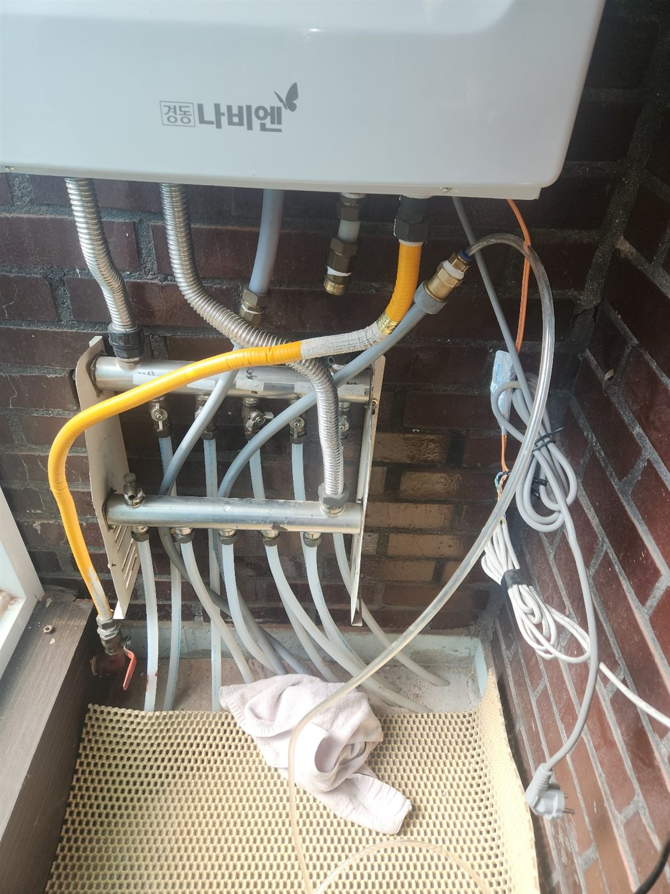
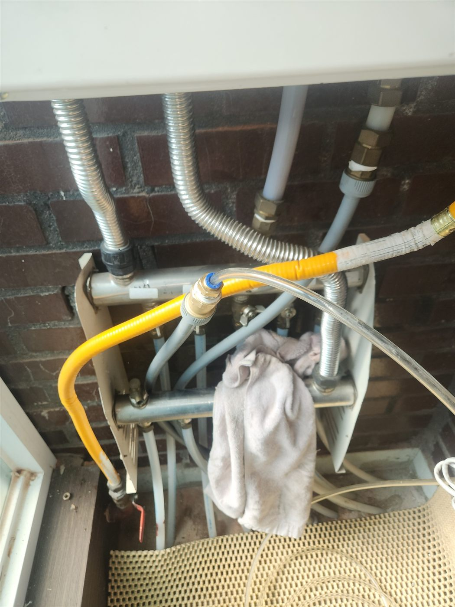
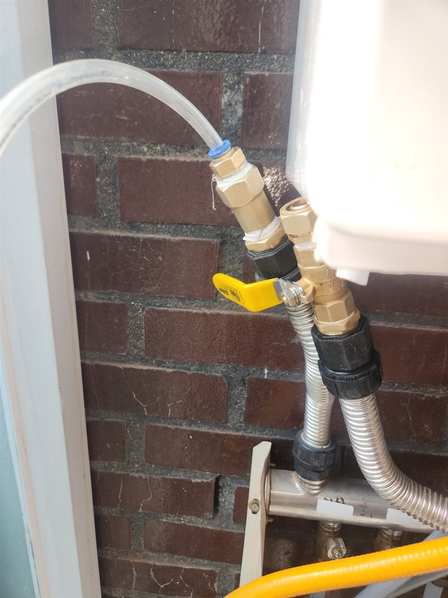

현장 상황
평택시 죽백동에서 보일러 난방 배관의 누수를 확인하기 위해 보일러 공압검사를 진행한 현장입니다. 난방 배관은 바닥 아래에 묻혀 있어서 겉으로는 확인할 수 없고, 압력으로 새는 여부를 먼저 확인해야 합니다.

공압검사 준비
난방 분배기에 호스를 연결하고 압력게이지가 달린 검사 장비를 이어 공기를 채웠습니다. 압력이 일정하게 유지되면 정상이고, 시간이 지나며 떨어지면 어딘가에서 새고 있다는 뜻입니다.

라인별로 나눠 확인
난방 라인은 여러 갈래로 나뉘어 있어서 한 라인씩 밸브를 잠그며 압력 변화를 비교했습니다. 이렇게 하면 문제가 있는 라인을 좁혀 나갈 수 있습니다. 열화상 장비로 바닥 온도 분포를 함께 보면 위치를 더 정확히 짚을 수 있습니다.


보일러 배관 누수와 공압검사
난방 배관은 물이 도는 닫힌 회로여서, 공기로 압력을 걸어 유지되는지 보면 누수 여부를 판단할 수 있습니다. 물 대신 공기를 쓰면 검사 중에 바닥이나 집 안이 젖을 염려가 없습니다. 압력이 떨어지면 라인별로 나눠 확인해 문제 라인을 좁히고, 보수한 뒤에는 다시 압력이 유지되는지 확인합니다.
마무리
난방을 켰을 때 특정 구역의 바닥만 유난히 뜨겁거나 축축하다면 보일러 배관 누수를 의심해 볼 수 있습니다. 확인된 구간만 열어 배관을 보수한 뒤 다시 공압검사로 압력이 유지되는지 확인하는 순서로 진행합니다.
바닥 공사가 필요한 만큼 일찍 진단받을수록 공사 범위가 줄어듭니다. 평택 죽백동에서 난방할 때 바닥 온도가 구역마다 다르게 느껴지신다면 연락 주세요.
접수 안내
비슷한 증상으로 문의하실 곳을 찾고 계신다면 전화로 접수해 주세요. 접수 건은 확인 후 신속하게 연결해 안내해 드리며, 현장 진단 후 견적에 동의하신 뒤에만 작업이 진행됩니다.